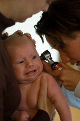
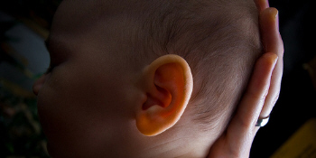
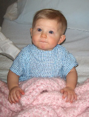

Treating the Baby Ear Infection: Sweet Pain Relief at Home and at the Doc's
If you're dealing with a baby ear infection, chances are you're exhausted, cranky, and quickly reaching the "overload" button on your mom-o'meter. Fortunately, I've been you.
In fact, I AM you.
Last night I got a whoppin' 5 hours of sleep. Why? Because my precious Bella has a double ear infection. (How do I know? First I used these 7 tests, then I made an appointment and
confirmed the bad news.)
And she's not an easy patient. YES, pick me up! NO, put me down! YES, cuddle me! NO, don't touch me! And back and forth all night.
(A quick shout-out to all you single moms out there, who have to do this alone. You have my utmost respect.)
Healing the baby ear infection is easily priority Numero Uno on every
sleep-deprived parent's list of to-do's.
Here are some of the common treatments you can use at home, and a few "heads up" on what your doctor may use to achieve the baby ear infection miracle we're all yawning for.
But first...if your baby seems to pass several of the symptom tests found in Part One, call your doctor
for an appointment. Treated, a baby ear infection is relatively minor. Untreated
it could spread and morph into something much more serious, like meningitis.
Your baby's doctor will look inside her ear with a special tool (an otoscope) to look
for an eardrum that is red, bulging, and possibly even draining.
Germ Gambling
There are two major germ classes that cause infections: viruses and bacteria.
70% of all ear infections are caused by bacteria. Viruses cause about 8-25%, and the
rest is a nasty party of both.
Antibiotics will only work on the bacteria-caused
infections. (Viruses, like the common cold, can't be treated with medicines.)
Initially, your doctor will gamble. Either prescribing antibiotics ("I think
it's bacteria") or sending you home with at-home care instructions ("I think it's
viral.") The only way your doctor would be able to tell for sure would be
to take a sample of the fluid using a small needle.
Baby Ear Infection Medication

{Photo by Maessive}
Side Note: For those moms who would rather not give prescriptions to your baby, let me introduce you to a homeopathic alternative.
If your baby is younger than 6 months, seems predisposed to ear infections, has had
multiple recent infections, or has had symptoms longer than 48-72 hours, it's
very likely your doctor will prescribe an antibiotic.
The most popular of
which is amoxicillin. (Be sure to mention to your doctor if there is penicillin
allergy in the family.)
Side Note: Amoxicillin is one of the $4 medications available at your local Walmart. It must be stored in the fridge and shaken well before each dose. Ask your pharmacist
for a syringe, it makes giving the medicine a thousand times easier.
Once you've started your infant on the medication, it is extremely important
that you finish the whole dose. No cheating!
Just because Little Jimmy
feels better around Day 6 doesn't mean you can quit!
There may be some bacteria still left inside, even though the pain is gone.
If you stop too early, you may allow the
suave Mr. Bacteria to start his family all over again.
In some cases, your doctor my prescribe ear drops (like benzocaine). Never, ever
put anything into your baby's ears without a doctor's direction. (Including Q-tips!)
Once you've finished the medication, schedule a follow-up appointment with the
doctor. He'll want to make sure there's no more fluid behind the eardrum. 5 out of
every 10 children still have some fluid 3 weeks after an ear infection is treated.
At-Home Pain Relief for an Infant Ear Infection

{Photo by Bolton}
If your doctor sends you home for further observation, or if you're simply trying
to get through the night before the doctor visit in the morning, there are some at-home
treatments you can try for a baby ear infection.
You can give infant acetaminophen (Tylenol) to help lower any fever and provide pain relief.
You could also offer ibuprofen (Motrin, Advil), in alternating doses every 3 - 4 hours.
Never give your baby aspirin. Be sure to follow the appropriate dosage guidelines.
Side Note: The safest way to administer medication to a child is by weight. To discover your baby's weight, weigh yourself first,
then you and your baby. Subtract the two numbers to discover your infant's current weight.
If you'd rather not give medicine, you can press a warm (not hot) wash cloth
or water bottle against the ear to mask the pain and distract your baby. Or try an all-natural homeopathic remedy instead.
Slant your baby's crib mattress up a little by sliding a pillow underneath (between crib slats and mattress).
The slight angle may alleviate some of the pressure on her ears. Just be sure she can't climb out! Remove the bumpers if your infant is younger than 5 months.
If you're afraid he'll slide to the bottom, a small handtowel rolled up and placed under his bottom (like he's "sitting") can help him stay in place.
Antihistamines and decongestants have been shown in trials not to be very effective in children. In fact, in some cases they can be
very dangerous (even fatal) when given to young children. Use them only at the direction of a doctor.
Finally, a study published in the Journal of Clinical Chiropractic Pediatrics
showed that 80% of the 400 children who received regular gentle adjustments avoided
ear infections for at least another 6 months.
Healing Baby Ear Infections With Tubes
Installing drainage ear tubes (called a tympanostomy) is the most common
surgical procedure for babies every year. More than 1 million are performed every year.
Of course, they don't let you just sign your baby up. Here are the usual requirements:
Persistent fluid in the middle ear for more than 3 months with hearing loss
Three or four ear infections over a 6-month period or 6 or more in a year.
Here's a fun fact! I was the first child in
the state of Iowa to undergo the procedure to place tubes in my ears.
(At least
that's what my mother says...)
It's on the resume.

{Elena is ready for surgery}
In January 2008, we had to take our little Elena (then 10 months) in to get tubes
placed in her ears.
I was surprised how easy and non-complicated the whole procedure was. The toughest part
was preventing Elena from having anything to eat or drink the night before.
Once we got to the hospital, the whole procedure only took a few minutes. After staying
in the hospital another hour for observation, we were released. It took about a half a day.
The teeny-tiny (about the size of a pen tip) plastic tubes are surgically
placed in the eardrum to allow some of the fluid to drain out the ear and prevent
further infections.
The tubes don't make it completely impossible for her to get another baby
ear infection, but it does drastically reduce her chances. If she's had hearing loss,
it will be restored after the tubes are in.
The tubes will fall out on their own within 6-18 months, as the hole
closes. In about 1% of cases, the hole needs a surgical patch to close.
Finding baby ear infection pain relief is just a matter of mixing up the correct antidote.
A little Tylenol here...an antibiotic there...throw in a tube or two...and WHAM!
you've got a happy little girl again!
I just subscribed to the site, and I'm very happy I did. I have worked in the medical field for several years and love to have good resources for when things come up... ~ Crystal S.
What a great site and thanks for having it available! ~ Bernadette W.
I'm very excited to start receiving the newsletter. I've checked out your site a couple times and I loooovve how it's arranged, your language, and tips - it's great! ~ Emily N.
Heather, I can't express how happy I am I discovered your site! ~ Liza T.
Thank you Heather, for your wonderful newsletter. There is always something new! ~ Desiree T.
I'm a 1st time young mom, 23 and single, so I have found very very helpful...I can't seem to stop myself telling everyone I know about you, some thought you were my mom! ~ Vuyiswa N.
Your website is very helpful and I discovered a couple of great online stores. 'Cause I'm not a big reader, it is very nice that I can find the most important information through your
website. ~ Tonya G.
Thanks Heather! Your Milestone eBook is SO detailed and so correct. My son is doing all or most of the things and many are not mentioned in the usual books/sites. Great job and keep it up! ~ Anwesha C.
Thanks so much for creating such an AWESOME website. I really appreciate your sense of humor and real writing style. ~ Andrea Z.
My baby refused all bottles until you showed me the MAM bottle. Thank you so much for the recommendation. I wouldn't have known about them if not for your website. ~ Jennifer at Sweet Lilly ConfectionsThank you ladies! Talk about great motivation to keep writing...


 I just subscribed to the site, and I'm very happy I did. I have worked in the medical field for several years and love to have good resources for when things come up...
I just subscribed to the site, and I'm very happy I did. I have worked in the medical field for several years and love to have good resources for when things come up...